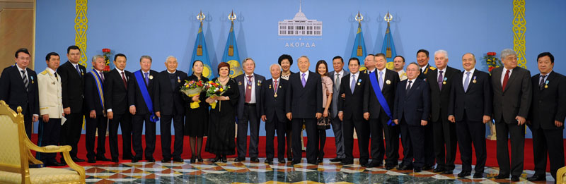

Home policy in Kazakhstan
The Assembly of the People of Kazakhstan
General information:
- The Assembly is a consultative - advising body under the RK President, which was founded under the Decree of the President of the RK on March 1, 1995.
- The Assembly decisions bear recommendation nature.
- RK President is the Chairman of the Assembly.
- The Chairman has 2 Deputies appointed by the RK President by the proposal of Assembly members.
The Assembly activity is directed to the solution of the tasks given below:
- to promote the maintenance of interethnic concord and social stability;
- to work out proposals over the state policy, making for the development of friendly relations between peoples residing on the RK territory, to promote their cultural and spiritual revival and development on the basis of observance to principles of equality;
- formation of the public political culture, resting on civilized and democratic standards; to provide for consideration of multilateral ethnic interests within the national policy held by the State;
- to search for compromises to settle the social conflicts arising in the society.
- The Assembly is shaped by the RK President out of the representatives of National Cultural Centers, Veterans’ Councils, and any other entities given their trustworthiness among the public, social activity, practical expertise.

Financing of Assembly activities is made via republic and local budget resources as well as voluntary donations. The decision on restructuring or termination of the Assembly activities is made by the RK President on his own initiative or on the proposal of not less than 2/3 Assembly members. 8 sessions of the Assembly of the Peoples of Kazakhstan has taken place since the time it was established.
1
The first session of the Assembly of the Peoples of Kazakhstan took place on March 24, 1995 in Almaty. See: Report of N.Nazarbayev "For Peace and Accord in Our Common Home" on the first session of the Assembly of the Peoples of Kazakhstan.
2
The second session of the Assembly of the Peoples of Kazakhstan took place on June 30, 1995 in Almaty. See: Report of N.Nazarbayev "Comprehension of Past and Further Democratic Reforming of Society" on the second session of the Assembly of the Peoples of Kazakhstan.
3
The third session of the Assembly of the Peoples of Kazakhstan took place on April 29, 1996 in Almaty. See: Report of N.Nazarbayev "Public Accord - Base of Democratic Development of Kazakhstan" on the third session of the Assembly of the Peoples of Kazakhstan.
4
The fourth session of the Assembly of the Peoples of Kazakhstan took place on June 6, 1997 in Akmola. See: Report of N.Nazarbayev "Historic Memory, national Accord and Democratic Reforms - Civil Choice of Kazakhstan People" on the fourth session of the Assembly of the Peoples of Kazakhstan.
5
The fifth session of the Assembly of the Peoples of Kazakhstan took place on January 21, 1999. See: Report of N.Nazarbayev "National Accord - Base of Stability and Development of Kazakhstan" on the fifth session of the Assembly of the Peoples of Kazakhstan.
6
The sixth session of the Assembly of the Peoples of Kazakhstan took place on December 10, 1999. See: Report of N.Nazarbayev "Let's Bow to the Past and Turn the Sleeves for the Future!" on sixth session of the Assembly of the Peoples of Kazakhstan.
7
The seventh session of the Assembly of the Peoples of Kazakhstan took place on December 15, 2000. See: the report of N.Nazarbayev on VII session of the Assembly of the Peoples of Kazakhstan.
8
The eighth session of the Assembly of the Peoples of Kazakhstan took place in Astana On October 24, 2001. See: report of N.Nazarbayev "Ten Years of Independence: Peace, Progress and Public Accord" on the eighth session of the Assembly of the Peoples of Kazakhstan.